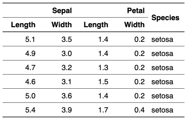
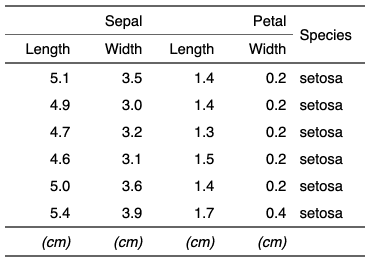

| set_header_footer_df {flextable} | R Documentation |
Use a data.frame to specify flextable's header or footer rows.
The data.frame must contain a column whose values match flextable
col_keys argument, this column will be used as join key. The
other columns will be displayed as header or footer rows. The leftmost column
is used as the top header/footer row and the rightmost column
is used as the bottom header/footer row.
set_header_df(x, mapping = NULL, key = "col_keys") set_footer_df(x, mapping = NULL, key = "col_keys")
x |
a |
mapping |
a |
key |
column to use as key when joigning data_mapping. |


Other headers and footers:
add_header_lines(),
add_header_row(),
add_header(),
set_header_labels()
typology <- data.frame(
col_keys = c( "Sepal.Length", "Sepal.Width", "Petal.Length",
"Petal.Width", "Species" ),
what = c("Sepal", "Sepal", "Petal", "Petal", "Species"),
measure = c("Length", "Width", "Length", "Width", "Species"),
stringsAsFactors = FALSE )
ft_1 <- flextable( head( iris ))
ft_1 <- set_header_df(ft_1, mapping = typology, key = "col_keys" )
ft_1 <- merge_h(ft_1, part = "header")
ft_1 <- merge_v(ft_1, j = "Species", part = "header")
ft_1 <- theme_vanilla(ft_1)
ft_1 <- fix_border_issues(ft_1)
ft_1
typology <- data.frame(
col_keys = c( "Sepal.Length", "Sepal.Width", "Petal.Length",
"Petal.Width", "Species" ),
unit = c("(cm)", "(cm)", "(cm)", "(cm)", ""),
stringsAsFactors = FALSE )
ft_2 <- set_footer_df(ft_1, mapping = typology, key = "col_keys" )
ft_2 <- italic(ft_2, italic = TRUE, part = "footer" )
ft_2 <- theme_booktabs(ft_2)
ft_2 <- fix_border_issues(ft_2)
ft_2